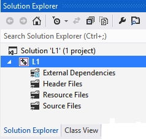
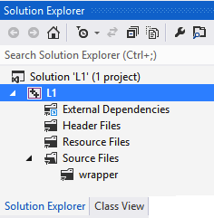
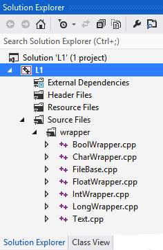

Adding .cpp Files to a Project
1. Adding the Lab's .cpp files to the Workspace
Any time after a Project Solution has been created, you may add source code files.
- Right click on the Source Files folder icon and choose Add | Add Existing Item ...
- Add the desired .cpp files.
For example, if you're working on Lab 1, add all the .cpp files from the C:\CppDev\L1 folder. Do not add .H files, only .cpp files.
- Most labs will not require additional header files (i.e., .H or .HPP files), but if a lab does require them, do the following:
- Right click the Header Files icon and choose Add | Add Existing Item ...
- Add the desired .H and/or .HPP files.
|
 |
2. Creating a Wrapper Filter for holding C++ Wrapper Classes Types
After a project has been created, you must add a filter subordinate to the "Source Files" folder. The filter folder will initially be empty, however, you will then add .cpp files for the Standard C++ Wrapper Classes (Boolean, Character, File, Integer, Long, and Text). You must do this only once for each project you create, and you must add these before trying to compile your project.
- Right click the Source Files folder icon and choose Add | New Filter ...

- Name the new filter wrapper
- Now, right click the wrapper filter (looks like a folder) and choose Add | Add Existing Item ...
We're going to add files to the wrapper filter.
|
 |
- From the "Add Existing Item" dialog you must navigate to the C:\CppDev\wrapper\class folder
(see screen shot to right).
- Select all the .cpp files that appear in the C:\CppDev\wrapper\class folder, then click OK
|
 |
3. When you are finished
| Your project solution window should look similar to the screen shot to the right: |
 |